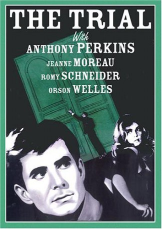

#7028 Der Prozeß
Alternativ: The Trial (Englischer Titel)
 
 IMDB-Wertung: 7.8 / 10
IMDB-Wertung: 7.8 / 10  Metascore: 0
Metascore: 0 
Josef K wakes up in the morning and finds the police in his room. They tell him that he is on trial but nobody tells him what he is accused of. In order to find out about the reason of this accusation and to protest his innocence, he tries to look behind the facade of the judicial system. But since this remains fruitless, there seems to be no chance for him to escape from this Kafkaesque nightmare.
Jahr: 1962
Dauer: 121 Minuten
FSK: 16
Land: Frankreich Studio: Universal Pictures Home EntertainmentTonspuren:
Untertitel: Deutsch, Englisch,
Auflösung: 1080p (1776x1080) Größe: 11161 MB
Genre: Thriller, Drama, Mystery
Regisseur:  Orson Welles
Orson Welles
Drehbuch: Pierre Cholot
Soundtrack:
Darsteller:
 Anthony Perkins als Josef K.
Anthony Perkins als Josef K.- Arnoldo Foà als Inspector A
 Jess Hahn als Second Assistant Inspector
Jess Hahn als Second Assistant Inspector- Madeleine Robinson als Mrs. Grubach
 Jeanne Moreau als Marika Burstner
Jeanne Moreau als Marika Burstner- Suzanne Flon als Miss Pittl
 Romy Schneider als Leni
Romy Schneider als Leni- Fernand Ledoux als Chief Clerk of the Law Court
 Akim Tamiroff als Bloch
Akim Tamiroff als Bloch- Elsa Martinelli als Hilda
- Thomas Holtzmann als Bert the Law Student
 Michael Lonsdale als Priest
Michael Lonsdale als Priest Orson Welles als Albert Hastler - The Advocate / Narrator
Orson Welles als Albert Hastler - The Advocate / Narrator- Billy Kearns als First Assistant Inspector
- Maurice Teynac als Deputy Manager
- Naydra Shore als Irmie
- Raoul Delfosse als Policeman
- Jean-Claude Rémoleux als Policeman
- Max Buchsbaum als Examining Magistrate
- Carl Studer als Man in Leather
- Max Haufler als Uncle Max
- Wolfgang Reichmann als Courtroom Guard
- William Chappell als Titorelli
- Guy Grosso als Josef K.'s Colleague , uncredited
Datei: X:\1962\Prozeß, Der (1962, FSK16, 1776x1080).mkv seit 18.09.2017
Festplatte: HD 1900-1970
 Es gibt insgesamt 23 Filme in der Gruppe '1962'
Es gibt insgesamt 23 Filme in der Gruppe '1962'